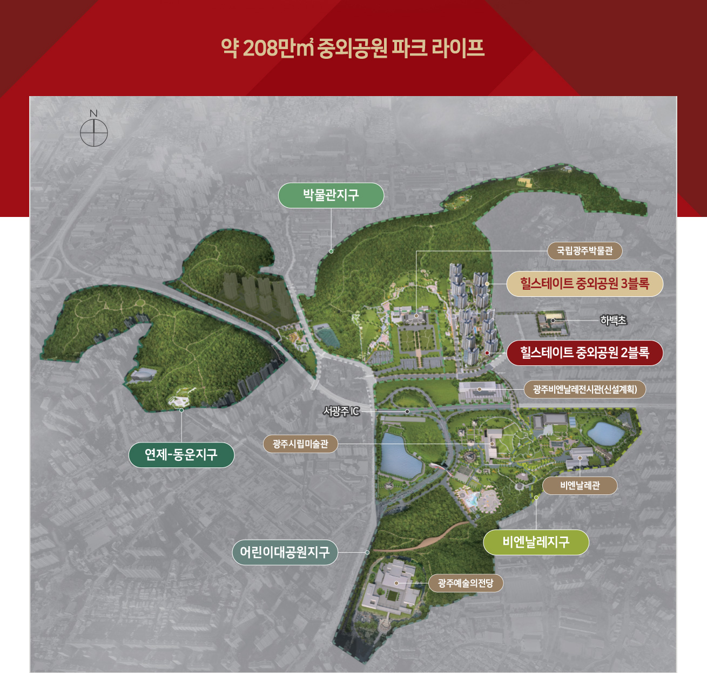

본 홈페이지에 사용된 CG는 고객의 이해를 돕기 위해 제작된 것으로 실제와 차이가 있을 수 있습니다.
중외공원 지구별 시설은 고객의 이해를 돕기 위해 공원조성계획총괄도(광주광역시 고시 제 2023-252호)를 참고하여 연출한 이미지로실제와 다르며, 중외공원 개발계획은 사업주체 및 시공사와 무관합니다.
광주비엔날레전시관(신설계획)은 고객의 이해를 돕기 위해 광주광역시 시정소식 보도자료 ‘광주비엔날레 전시관 국제설계 23개 업체 응모’(2023.11.21. 배포), [광주 비엔날레 전시관 건립사업] 국제설계공모 심사결과 공고(광주광역시 고시 제 2023-2040)를 참고하여 연출한 이미지로 실제와 다르며, 인·허가 및 정부시책에 따라 변경 및 취소가 가능하며 사업주체 및 시공사와 무관합니다.
단지 동측과 하백초 서측을 연결하는 왕복 2차로 도로는 “광주광역시 북구 고시 제2020-102호, 2022-31호”를 참고하여 연출한 이미지로 차이가 있을 수 있으며, 인·허가 및 정부시책에 따라 변경 및 취소가 가능합니다.